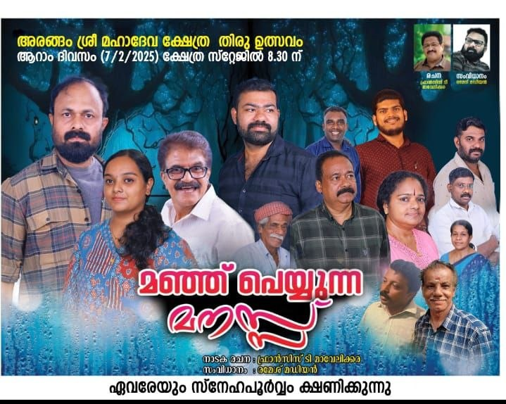
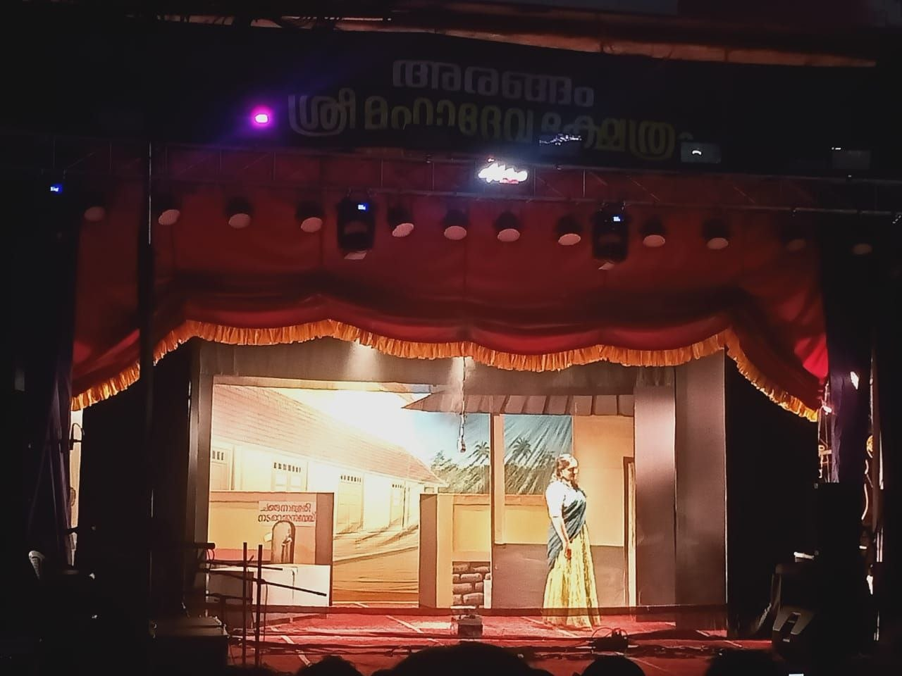

മഞ്ഞു പെയ്യുന്ന മനസ്സ്
Author: പ്രഭ ആർട്സ് ക്ലബ്, ആലക്കോട്
Review by: സക്കറിയാസ് കെ ജെ

"മഞ്ഞു പെയ്യുന്ന മനസ്സിനെ"ക്കുറിച്ച് പറഞ്ഞാൽ - ഒരു പ്രൊഫഷണൽ നാടകത്തിൻ്റെ പതിവു ചേരുവകകളെല്ലാമുള്ളതാണ് സ്ക്രിപ്റ്റ്.
ഒരു കഥ, പിരിവുകളും ഉൾപ്പിരിവുകളുമായി പുരോഗമിപ്പിച്ച്, ചില സസ്പെൻസുകളും സർപ്രൈസുകളുമുൾച്ചേർത്ത് പരിസമാപ്തിയിലെത്തിക്കുക. ഇതിനിടയിൽ പാട്ട് , ഡാൻസ്, പ്രേമം പ്രേമഭംഗം... അങ്ങനെയങ്ങനെ... നാടകത്തിൻ്റെ ആകെത്തുകയെന്ന നിലയിൽ ഒരു സന്ദേശമോ പ്രഖ്യാപനമോ ഒരു നെടുങ്കൻ ഡയലോഗിലൂടെ നടത്തി പര്യവസാനിപ്പിക്കുക.
അവിടെയാണ് ഇന്ദിരാ ഗാന്ധിയും രാജീവ് ഗാന്ധിയുമൊക്കെ ഒരിക്കലേ മരിക്കൂ ... ഞങ്ങളേപ്പോലുള്ളവർക്ക് ജീവിതമില്ല ചരിത്രമില്ല... കലാപത്തിനു ക ത്തിമിനുക്കുന്നവരെ... ബോംബു നിർമ്മിക്കുന്നവരെ... എന്നൊക്കെയുള്ള സുദീഘർമായ സംഭാഷണം വരുന്നത്. പൊതുവേ കണ്ടുവരുന്നൊരു രീതിയാണിത്.
ഇതിനിടയിൽ എഴുത്തുകാരൻ്റെ താല്പര്യമനുസരിച്ച് ഒട്ടും സാംഗത്യമില്ലാത്ത സംഭാഷണങ്ങൾ കഥാപാത്രങ്ങളെക്കൊണ്ട് പറയിക്കയും ചെയ്യും.
ഇവിടെ സാധു ജീവിയെന്ന കഥാപാത്രം പറയുന്ന ഡയലോഗ് നോക്കൂ...
"IAS കാരനേപ്പോലെയല്ല ചങ്ങനാശ്ശേരി നടരാജൻ. നാലുപതിറ്റാണ്ടുകാലം കേരളത്തിലെ അരങ്ങിൽ നിറഞ്ഞുനിന്ന സജീവ സാന്നിദ്ധ്യം. നാടകത്തിനു വേണ്ടി ജീവിതം ഹോമിച്ചവൻ "
(സംഗതി ശരിയാണ്. ഒരു കാലത്ത് നാടകവേദിയിൽ നിറഞ്ഞുനിന്ന വ്യക്തിയാണദ്ദേഹം... ആലപ്പി തിയേറ്റേഴ്സിൻ്റെ നാടകങ്ങളിൽ ആലക്കോട്ടും വന്നിട്ടുണ്ട്. വലിയ ഉയരമില്ലാത്ത ഒരു മനുഷ്യൻ. അസുഖ ബാധിതനായി ഒരു കാല് മുറിച്ചു കളഞ്ഞിട്ടും വീൽ ചെയറിലിരുന്ന് അഭിനയിച്ചയാൾ എന്ന് പിന്നീട് വായിക്കയും ചെയ്തു.)
(ഇതു പറയിക്കാൻ സാധു ജീവി വന്നപാടെ ആ റോഡിൻ്റെ പേര് മുകുന്ദ റാവുവിനേക്കൊണ്ട് വായിപ്പിക്കുന്നുമുണ്ട്.)
പിന്നെ തമാശ (?) ജനിപ്പിക്കാനായി പറയിപ്പിക്കുന്ന സംഭാഷണങ്ങൾ, "പണ്ട് വഴക്കു പറത്താൽ മാസം ഒന്നെങ്കിലും നീ കുളിക്കുമായിരുന്നു..." അതുപോലെ പെട്ടിയിലെ, സ്ത്രീകളുടെ അടിവസ്ത്രത്തെക്കുറിച്ച് പറയുന്നത്...
അച്ഛൻ മകനോട് പറയുകയാണ് "എൻ്റെ സഹോദരൻ ഗുജറാത്ത് കേഡറിൽ IPS കാരനാ. ഇപ്പോൾ ADGP. സഹോദരീഭർത്താവ് IAS കാരൻ. സഹോദരി IFS കാരി. ഞാനോ സർക്കാർ സർവ്വീസിൽ നിന്നു വിരമിച്ച വെറുമൊരു പ്യൂൺ. ഇത് ആ മകന് അറിയാത്തതാണോ...!? പക്ഷെ പ്രേക്ഷകർക്ക് അറിയില്ലല്ലോ... ല്ലേ?😊
"നാടകമൊഴിച്ചുള്ള സാഹിത്യ ശാഖയിലെല്ലാം കഥ പറയുകയും എന്നാൽ നാടകത്തിൽ കഥ കാണിച്ചു കൊടുക്കുകയുമാണ് കഥാപാത്രങ്ങൾ ചെയ്യുന്നത്" - എന്നാണ് പറയുക.
ഓമന ടീച്ചർ സൂചിപ്പിച്ചതുപോലെ കള്ള ഗർഭമൊക്കെ ഉണ്ടാക്കി സംഘർഷം ജനിപ്പിക്കുന്നതൊക്കെകണ്ടു മടുത്തതല്ലേ?... ഒരാളുടെ പേരു കേൾക്കുമ്പോൾ ബോധം കെടുന്നതും...😊 നാടകം ഇന്നെത്രയോ ഇതിൽ നിന്നൊക്കെ മാറിയാണ് സഞ്ചരിക്കുന്നത്.
ഇനി കൂടുതൽ ദൂരം പോകുന്നില്ല.
അഭിനയത്തിൽ നമ്മുടെ നടീ നടന്മാരെല്ലാവരും നല്ല പ്രകടനം കാഴ്ചവച്ചു. ചിലരൊക്കെ എടുത്തു പറയാവുന്ന വിധവും നന്നായി.
എങ്കിലും ശബ്ദ നിയന്ത്രണത്തിലും (ഉയർത്തി പറയുമ്പോൾ ചിലപ്പോൾ അലർച്ച പോലെ അനുഭവപ്പെടുന്നു) വോയ്സ് മോഡുലേഷനിലും കുറച്ചുകൂടി ശ്രദ്ധിക്കുന്നതും (അനിൽ സൂചിപ്പിച്ചിരുന്നു) രംഗചിത്രങ്ങൾക്ക് (സ്റ്റേജ് കോമ്പസിഷൻ) മിഴിവ് വരുത്തക്കവിധം ചലനങ്ങളിലും നില്പിലും അല്പം കൂടി ശ്രദ്ധപതിപ്പിക്കുന്നതും കുറേക്കൂടി മനോഹരമായ രംഗകാഴ്ച സമ്മാനിക്കും.
പ്രഭയുടെ പ്രവർത്തകർക്ക് പ്രത്യേകിച്ച്, പാപ്പച്ചൻ കിഷോർ, പ്രിയ, അനുപ്രിയ, ഹരിലാൽ ഒക്കെ ഏറെ തിരക്കുകൾക്കിടയിലാണ് സമയം കണ്ടെത്തി ഈ നാടകത്തിനായി യത്നിച്ചത്. ഗോപി വയ്യായ്കയിലും സജീവമായി. എല്ലാറ്റിനും ഫലം കണ്ടു. അതുപോലെ ജോസ്, അപ്പച്ചായി അടക്കമുള്ളവരും തന്നെ തങ്ങളുടെ റോളിനോട് നീതി പുലർത്തി.
പ്രസാദ് മാഷ് സൂചിപ്പിച്ചതുപോലെ പ്രൊഫഷണൽ നാടകങ്ങളുടെ സ്വാധീനത്തിൽ നിന്ന് അമേച്വർ നാടകങ്ങൾ മാറിനില്ക്കുന്നത് നല്ലതാണെന്നെനിക്കും തോന്നി.
എന്തായാലും ആസ്വാദകശ്രദ്ധ പിടിച്ചു പറ്റുന്ന തരത്തിൽ ഒരു നാടകം അവതരിപ്പിക്കാനായതിൽ പ്രഭക്ക് അഭിമാനിക്കാം.
Review by: രമേശൻ പി വി

അരങ്ങം ക്ഷേത്ര സ്റ്റേജിൽ കഴിഞ്ഞ ദിവസം അരങ്ങേറിയ 'മഞ്ഞു പെയ്യുന്ന മനസ്സ്' സ്ക്രിപ്റ്റ് , അഭിനയം, സംവിധാനം - ഈ മേഖലകളിലൊക്കെ വളരെ മികച്ചതായി തോന്നി.
ബാബരി മസ്ജിദ് തകർക്കപ്പെട്ടതും തുടർന്നുണ്ടായ കലാപങ്ങളും സാമൂഹ്യഘടനയെയും മനുഷ്യജീവിതങ്ങളെയും കീഴ്മേൽ മറിക്കുന്നു. ഈ വിഷയം പ്രധാന പ്രമേയമായി വരുന്നുവെങ്കിലും വർഗീയത, എന്ന വിഷയമോ രാഷ്ട്രീയ പരിവേഷമോ നൽകാതെ ഒരു പടി കൂടി മുന്നോട്ടു കടന്ന്, ശരാശരി മനുഷ്യൻ്റെ ഉള്ളറിഞ്ഞ് മനുഷ്യപ്പറ്റുള്ള കുറച്ചു മനുഷ്യരുടെ ജീവിത സമസ്യകൾ, സ്നേഹമെന്ന അടിസ്ഥാന വികാരത്തിൻ്റെ വ്യത്യസ്ത മുഖങ്ങൾ ഇവ തുറന്നുകാട്ടാൻ പരിശ്രമിച്ചുവെന്നതിലുമാണ് ഈ നാടകം നാടിൻ്റെ അകം പൊരുളാകുന്നത്.
അഭിനേതാക്കൾ ഓരോരുത്തരും അവരവരുടെ ഭാഗം മികച്ചതാക്കി. ചിലപ്പോഴൊക്കെ അക്കാര്യത്തിൽ മത്സരമുണ്ടെന്നും തോന്നി.
ഈ നാടകം അരങ്ങിലെത്തിക്കാൻ പരിശ്രമിച്ച എല്ലാവരും തീർച്ചയായും അഭിനന്ദനം അർഹിക്കുന്നു.
ഒത്തിരി സ്നേഹം🥰
പത്ര മാധ്യമങ്ങളിലൂടെ....
ദേശാഭിമാനി മക്തബ്
മക്തബ്